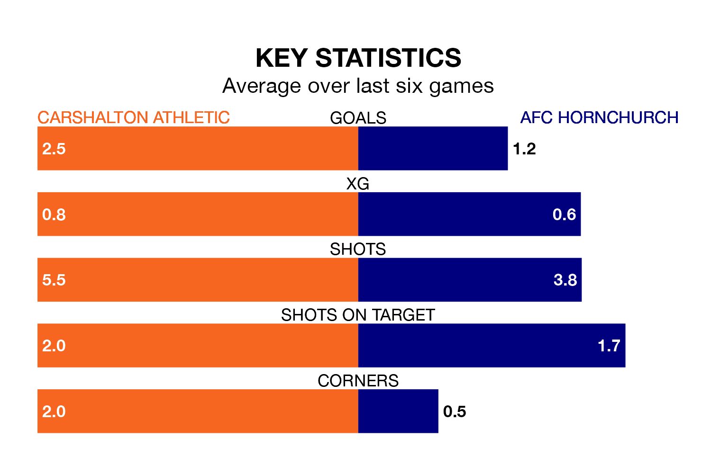

AFC Hornchurch are strong favourites to take all three points despite Carshalton Athletic's home advantage in Saturday's match at War Memorial Sports Ground.
*Betting Company* are offering odds of 1.53 on Hornchurch sealing the win, with the visitors sitting first in Isthmian Premier Division table.
Carshalton, who are eighth in the league and 19 points behind Hornchurch, are priced at 4.5 to win. A draw is set at 4.2.
With 57 goals in 22 games so far this season, Hornchurch are the league's highest scorers with 2.6 goals per game. And they are conceding fewer than average, letting in 17 goals at a rate of 0.8 per game.
Carshalton are also above average scorers, with 1.8 goals per game, compared to a league average of 1.6. They have conceded 1.5 goals per game.
In the last five years, Carshalton and Hornchurch have played each other on eight occasions. Carshalton won one of them, Hornchurch three, and they drew four times.
On average, Carshalton scored 1.0 goal and Hornchurch 2.4 in those matches.
Their last meeting was on August 19, when they played out a 1-1 draw.
Athletic are in reasonable form in Isthmian Premier Division, with four wins and two losses from their last six games.
With two wins and three draws over that period, the away side's form is worse – they have taken nine points from 18, compared to the hosts' 12.
Carshalton's last match was on January 1, a 4-1 win against Kingstonian.
Hornchurch drew 1-1 with Horsham last time out, on January 6.
Updated: 13:38 (UTC), 10/01/24